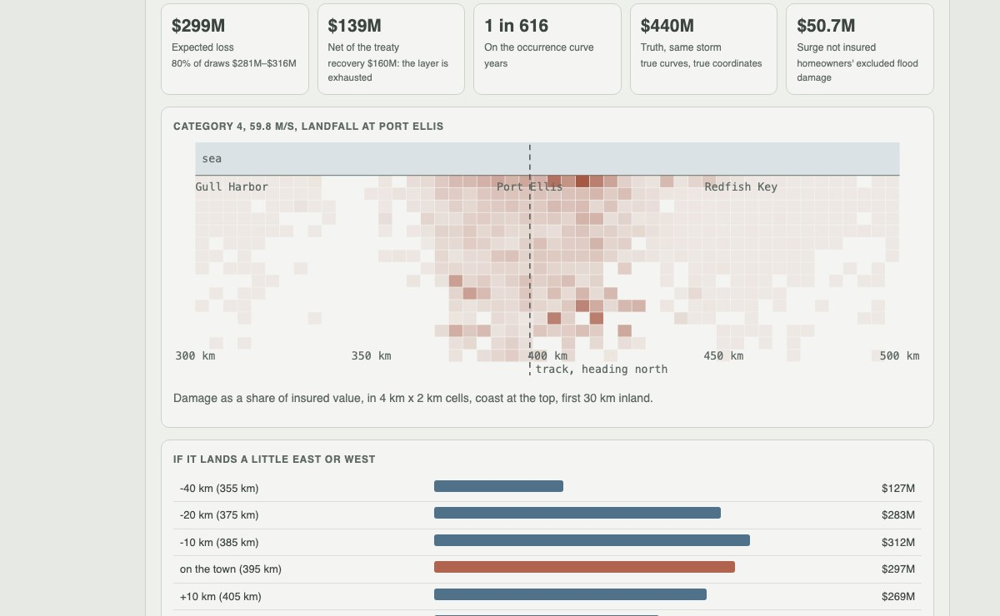
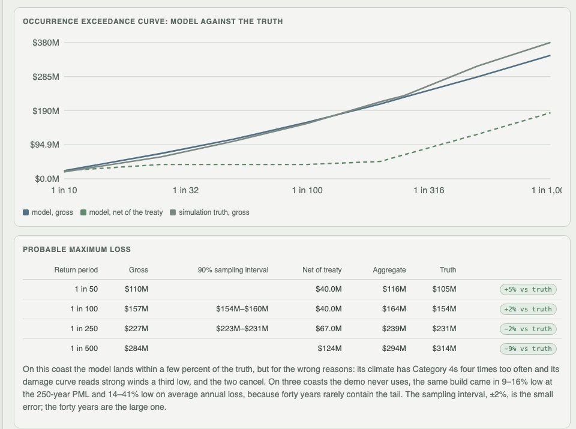
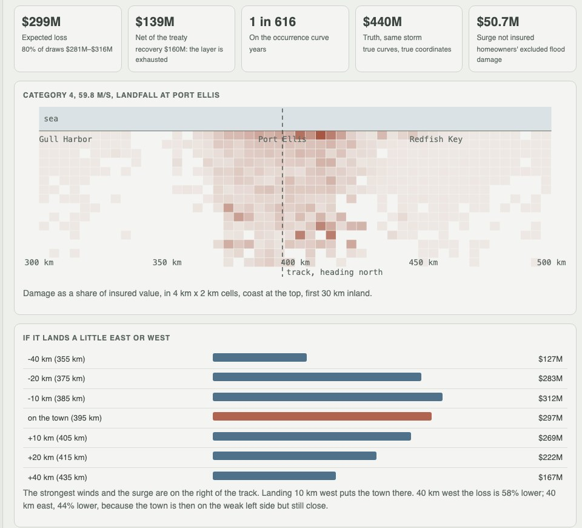

Python · catastrophe modelling · censored MLE · 2026-10
How Much Could One Hurricane Season Cost?
A catastrophe model for an invented insurer's 10,000-location coastal book: hurricane climate fitted to forty years of best tracks, a damage curve fitted to censored claims, 50,000 simulated landfalls, PML with its sampling interval, a Category 4 stress test and a four-eyes sign-off, all set against the truth (on three unseen coasts the model ran 9–16% low at the 250-year PML; the actuary's burn cost ran 43–59% low on average annual loss).

Built from a written blueprint as one vertical slice. Everything is simulated: the coast, the insurer's book, forty years of storms, fifteen years of claims and the true hurricane climate come from a generator in the repository. Nothing is a real insurer, coastline or hurricane record. The models never see the truth; it is shown only to judge them. No language model is used. Not built: real HURDAT2 or NOAA data, other perils, aggregate treaties and reinstatements, curved storm tracks, the blueprint's 100,000-location target, Kafka, Terraform, single sign-on.
01 — The problem
An insurer on a hurricane coast has to say how much a bad year could cost before it happens: what to hold in capital, how much reinsurance to buy, which towns are too concentrated. The record is short. Forty years of storms contain a handful of Category 4s, and a claims file only shows the losses big enough to pass the deductible. Can a model built from that much history get the tail right, and can it say how wrong it might be?
Blueprint 11 of twenty in a fourth build book, built as its demo scenario end to end.
02 — What I built
A Python service on PostgreSQL with a background worker and a web page, started by one docker compose up.
- A synthetic coast of eight towns, 10,000 locations with construction, elevation and policy terms, and a hidden true hurricane climate and damage curve.
- Exposure import with every row checked and geocoded on its own, and geocode precision kept.
- A hazard fit to forty years of noisy best tracks, and a censored damage-curve fit to fifteen years of claims.
- A 50,000-event catalogue: wind field, surge, damage with its scatter, deductibles, limits, surge cover and a per-occurrence treaty.
- Exceedance curves, PML with a bootstrap interval, TVaR, a Category 4 stress test with a damage map, and a four-eyes approval.
03 — How it was built
- 01
A book with the flaws a real one has
10,000 homes and small businesses on 600 km of coast, $12.75B insured. 16% have only a postal code and sit at their zone's centroid; homeowners have 2% or 5% hurricane deductibles and no surge cover; about 60% of commercial policies buy surge. A second file of five rows shows the import: two accepted, three refused one by one (unknown construction, a deductible not below the building value, coordinates at sea).
if r.deductible_pct * r.building_value + r.deductible_usd >= r.building_value: return "deductible is not below the building value", none - 02
Forty years of storms, and the claims nobody filed
The climate is fitted by maximum likelihood to 14 landfalls: a rate of 0.35 a year (truth 0.45, inside the interval). Two Category 4s in forty years make the fit expect one in every 12 landfalls; the truth is one in 50. The damage curve comes from 554 claims out of 6,987 policies in seven storms' footprints. A policy that never claimed still says something: its damage stayed under the deductible. The censored fit gets light damage right (1.7% at 45 m/s, truth 1.8%); a fit to the claims alone says 10.2%.
-(stats.beta.logpdf(r[rep], a[rep], bb[rep]).sum() + np.log(betainc(a[~rep], bb[~rep], np.minimum(ded[~rep], 1.0))).sum()) - 03
50,000 landfalls through the book
Events from the fitted climate; for each, a modified Rankine wind field with forward speed added on the right of the track, decay inland and surge by elevation; damage from the fitted curve with a Beta scatter; then deductible, limit, surge only where covered and the $160M xs $40M treaty. 144,118 simulated years in 32 s on one core, because each event only touches locations inside its track window where the expected damage is above one in 100,000. Average annual loss $9.2M against a truth of $8.9M (the burn cost of the forty observed storms on today's book: $9.6M); 250-year PML $227M against $231M.
live = (g > g_min[pl]) | (dpt > 0) # below g_min the mean wind damage is under 1e-5: nothing to draw - 04
Close for the wrong reasons
On the demo coast the model lands within a few percent, and the page says why: the climate has Category 4s four times too often and the damage curve reads strong winds a third low (32% at 75 m/s against 48%), and the two cancel. The bootstrap interval on the 250-year PML is about ±2%. That is the small error. The large one is having only forty years, and a bigger catalogue does nothing about it.
s = annual_losses[r.integers(0, n, n)] # resample whole simulated years out[rp].append(np.quantile(s, 1 - 1 / rp)) - 05
A Category 4 at Port Ellis, and who signs it off
A 60 m/s storm lands on the town with the most insured value: expected loss $299M (80% of draws $281M–$316M), $139M net of an exhausted treaty, about 1 in 616 years on the curve. The same storm through the true curves at the true coordinates costs $440M, so here the model is 32% low. Homeowners' excluded surge is $50.7M of damage nobody insured. Landing 10 km west is worse ($312M), because the town is then on the strong right side of the track. The analyst who ran the catalogue cannot approve it; the chief risk officer does.
if run["created_by"] == ctx.actor_id: raise Problem(409, "four_eyes", "the person who ran the catalogue cannot approve it")
04 — Results
The demo. The occurrence exceedance curve against the truth, and the PML table with its sampling interval:

The Category 4 stress test: losses on a map, and the same storm landing east or west:

On three other simulated coasts:
| Model vs truth | Baseline vs truth | |
|---|---|---|
| Average annual loss | 14–41% low | burn cost 43–59% low |
| 250-year PML | 9–16% low | naive damage curve 86–139% high |
| Light damage at 45 m/s (truth 0.018) | censored fit, close | naive fit 0.10–0.12 |
| P(Category 4+) per landfall (truth 0.020) | 0.004–0.017 | – |
| Catalogue sampling error, 250-year PML | ±3.0–4.4% | – |
| Category 4 at the largest town | −6% to +18% | – |
The model is low on every unseen coast, because forty years rarely hold enough Category 4s. The censored fit is the part that works: ignoring the policies that never claimed overstates the whole loss three to nine times. The burn cost of the observed storms, the actuary's usual check, is worse than the model.
Found while checking. A faster likelihood function gave NaN when a flat commercial deductible exceeded a small building's value, and the fit quietly stopped at its starting guess on one coast. Re-running the evaluation caught it, and the deductible ratio is now capped at 1.
Honest limits. One peril, straight coast, straight tracks, one treaty layer; the history, the claims and the truth are synthetic; measured at 10,000 locations, not the blueprint's 100,000.
Checks. 10 tests, including: the wind field is strongest on the right of the track and decays inland, surge only on the right at the coast; the catalogue's rate and landfall density match the climate; deductibles, limits and surge exclusions hold; the censored fit recovers the true curve when the wind is known while the naive fit overstates light damage; OEP never exceeds AEP and the treaty layer never exceeds its limit; the stress test's expected loss exceeds the loss at mean damage; the run's author cannot approve it; one insurer cannot see another's book.
05 — What I'd do next
- Pool the hazard fit across neighbouring coasts or a longer synthetic record, since forty years is the error that dominates.
- Write the book's summary at import time, so the book endpoint stops loading every location on each read.
- Aggregate covers and reinstatements, and a second peril.